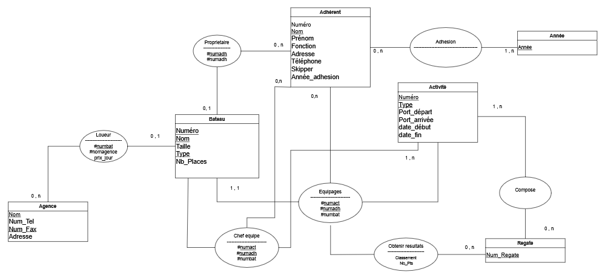

Projet Base de Données - 2025-2026
Création d'une base de données relationnelle complète nommée "Le Tourmentin" en SQL. Le projet couvre la modélisation conceptuelle, la traduction en schéma relationnel, et l'implémentation avec scripts SQL complets.
SELECT a.nom, a.prenom
FROM adherent a
JOIN cotisation c ON a.numadh = c.numadh
WHERE c.anneecot = 2017 AND c.paye = 'non';SELECT a.nom, ROUND(AVG(c.montant), 2) AS cotis_moy
FROM adherent a
JOIN cotisation c ON a.numadh = c.numadh
GROUP BY a.nom
ORDER BY a.nom;SELECT b.numbat, SUM(p.points) AS total_points
FROM bateau b
JOIN participation p ON b.numbat = p.numbat
JOIN activite a ON p.numact = a.numact
WHERE a.numact = 2
GROUP BY b.numbat
ORDER BY b.numbat;ALTER TABLE loueur ADD COLUMN prixlocation numeric(5,2);
UPDATE loueur SET prixlocation = 100 WHERE numbat IN (SELECT numbat FROM bateau WHERE nbplaces < 7);
UPDATE loueur SET prixlocation = 120 WHERE numbat IN (SELECT numbat FROM bateau WHERE nbplaces >= 7);Livrables :
Compétences :
Structure complète de la base de données
